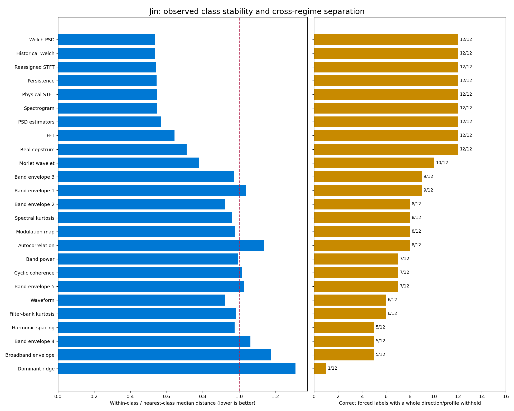
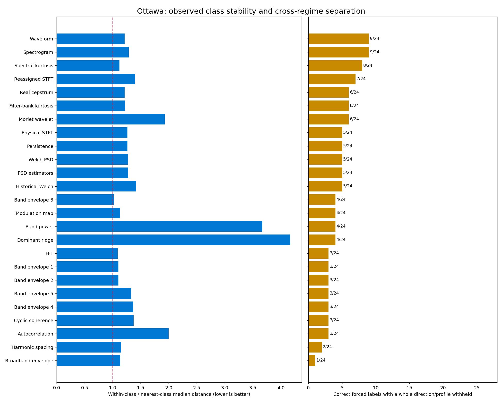
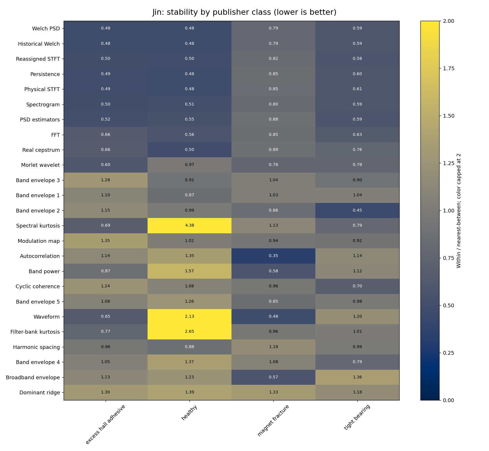
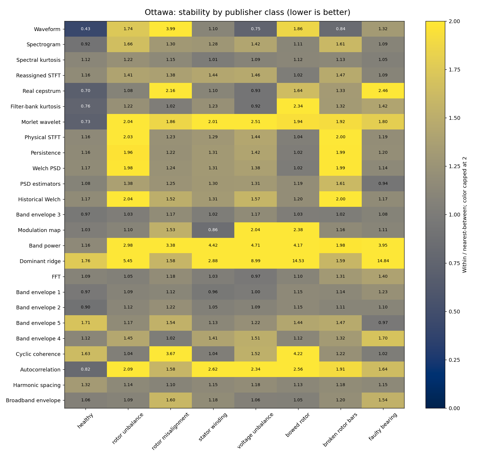

Adaptive Class Memory Increased Wrong Assignments
Aggregated class cards replaced individual references, and the adaptive arm added reviewed examples during a 72-acquisition Ottawa stream. Coverage rose mainly through wrong labels. The 32 reserved acquisitions remain unopened.
| Outcome on 72 stream acquisitions | Fixed memory | Adaptive memory |
|---|---|---|
| Correct automatic recognition | 16 | 18 |
| Wrong automatic assignment | 11 | 41 |
| Review required | 45 | 13 |
Class-memory results, protocol and limits. Raw memory-study artifacts remain local; only these aggregates are published.
Removing Diagram Types Did Not Pass The Safety Gate
Four recordings, each tested with its class present and excluded, using the later 26-diagram input. These eight primary decisions are consumed development cases. The repeat evidence is reported separately.
| Observed outcome | Complete input | Three views removed |
|---|---|---|
| Correct primary decisions | 5/8 | 6/8 |
| Correct recognition, class present | 1/4 | 2/4 |
| False rejection, class present | 3/4 | 2/4 |
| Correct rejection, class excluded | 4/4 | 4/4 |
| D03 known-class pair of identical requests | Other / Other | Other / wrong C06 |
The removed views are band power, autocorrelation and dominant-frequency tracking, including their explicit numerical evidence. The model still received 23 retained diagram types; the archived comparison displays four essential views.
Complete crossed-study evidence
46 per-request outcomes / Factorial, regression and repeat comparisons / Selected recording provenance
All 32 primary factorial decisions on D03/D07 remain Other across the eight removal combinations. Removing spectral kurtosis alone does not recover D07. Zero transport failures is not diagnostic correctness.
Class Stability Across Recording Conditions
Full spectral representations separate the observed Jin groups, while Ottawa families overlap across operating profiles. These forced-label checks use acquisition groups, not independent machines.




Family-by-family separation


Full numeric results and predictions / Diagram attribution audit
Evidence Boundaries
Publisher labels and model answers are visible. This is a review, not a blind human benchmark. State-of-the-art performance, human parity, independent-machine generalization and safe automatic acceptance are unestablished.
Audio attribution and modifications / Archive hashes / Publication and reproduction policy